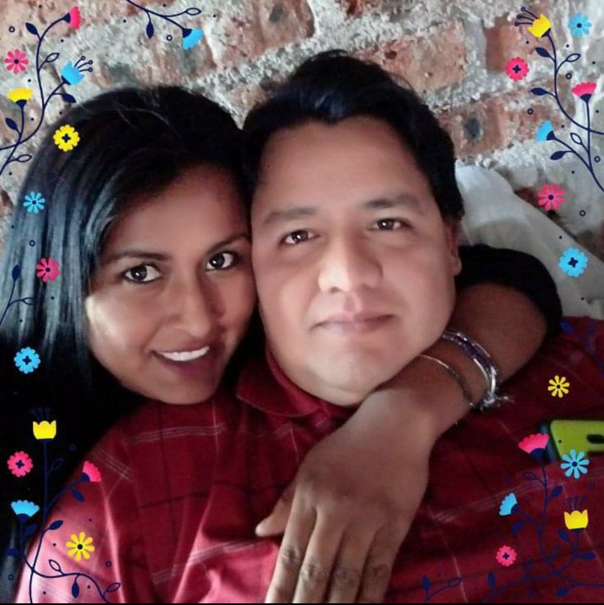

Nació el 11 de Noviembre del 1980.
Actualmente tiene 41 años y tiene una familia con Mariana Aldaco Onesto
con la cual tuvo 3 hijos, 1 niña (la mayor) y 2 niños (de 15 y 7 años respectivamente).
Tiene 6 hermanos, 3 son mujeres (Alejandra, Angelica y Beatriz) y 4 son hombres contandolo a él (Guillermo,
Victor Manuel, Sergio y él).
Es una persona que puede llegar a ser muy enojona pero al mismo tiempo es muy comprensiva.
Le gusta la música norteña, en especial la de "Los Tigres del Norte", le gustan también mucho las cumbias
y también bailarlas, el se identifica mucho por bailar ese tipo de música ya que es su favorita.
Sus padres se llaman:
Isaias Torres Trejo
Gloria Luna Ceballos